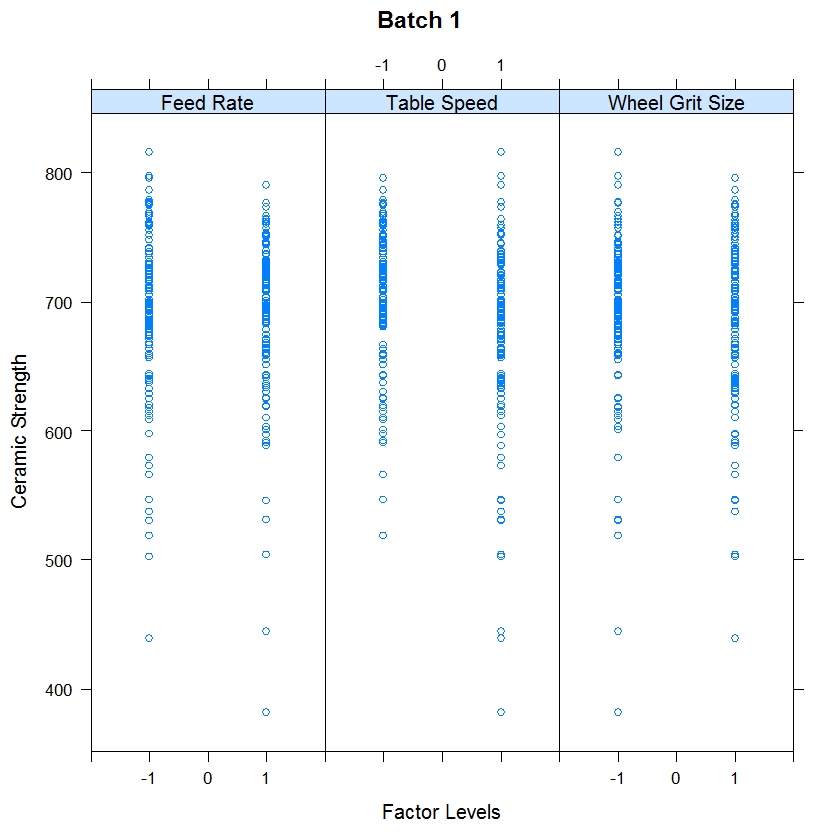
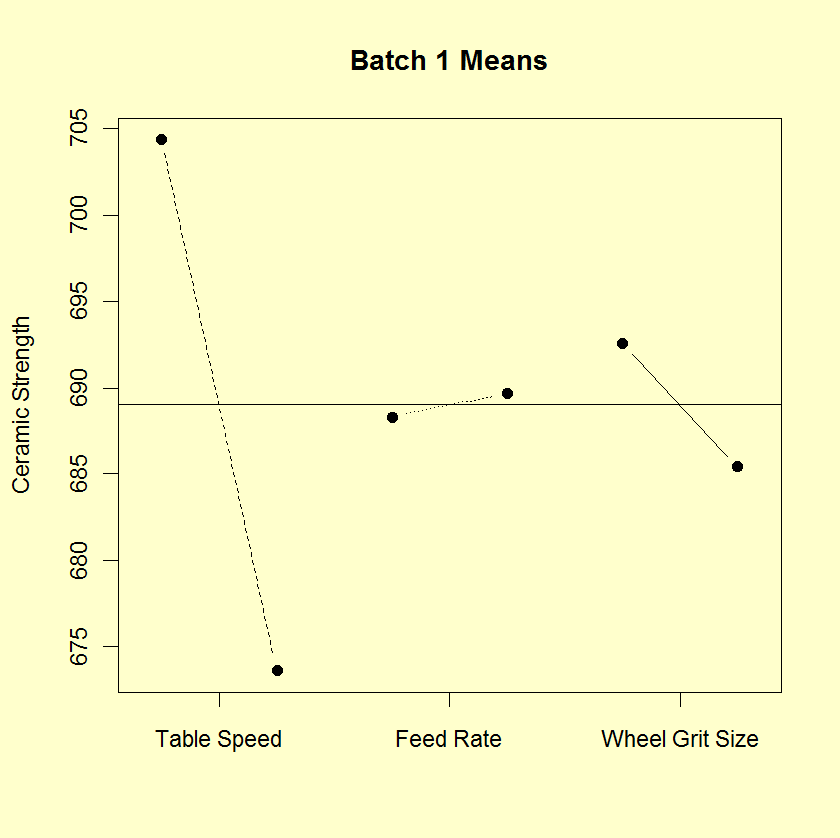
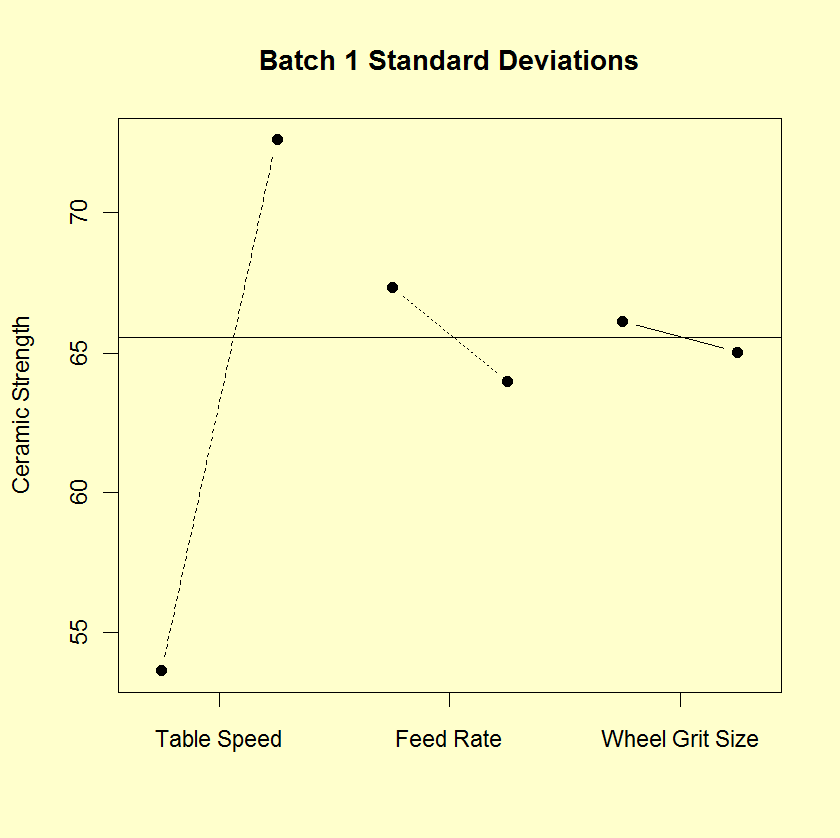
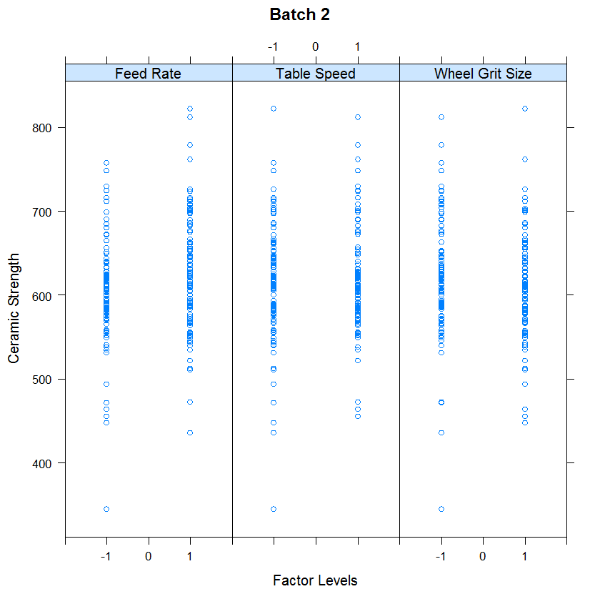
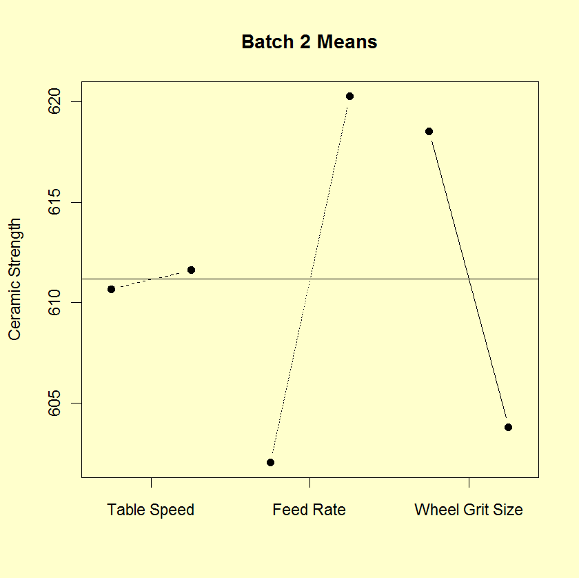
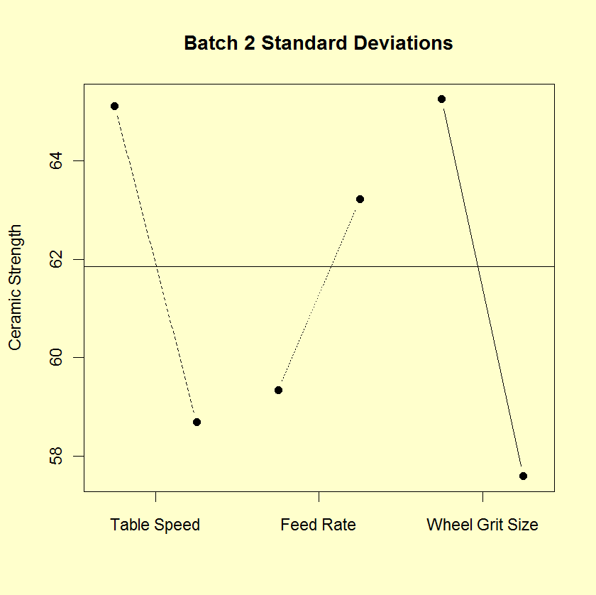
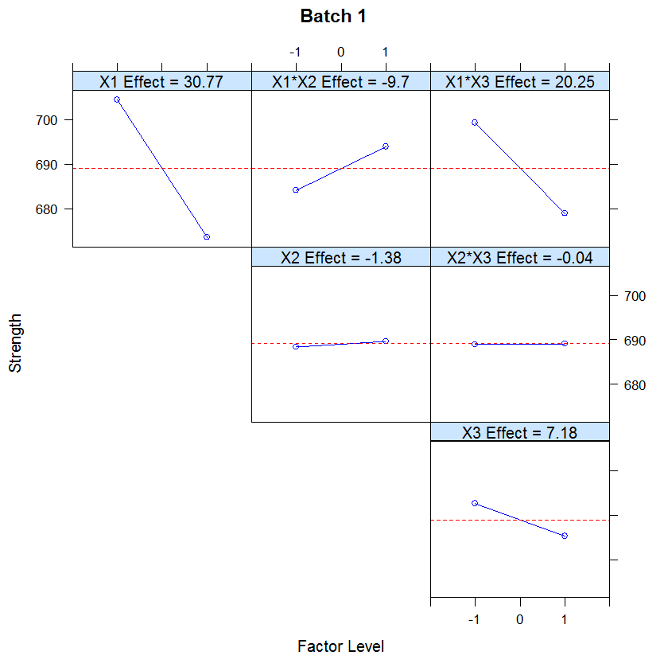
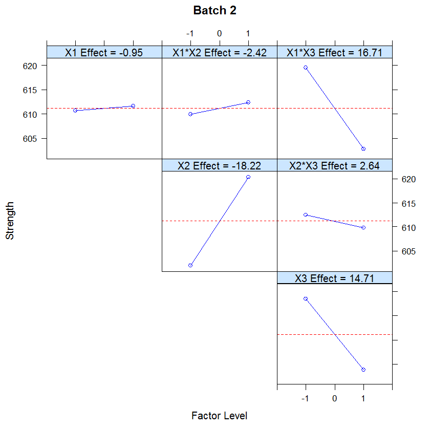

1.
Exploratory Data Analysis
1.4.
EDA Case Studies
1.4.2.
Case Studies
1.4.2.10.
Ceramic Strength
1.4.2.10.5.
|
Analysis of Primary Factors
|
|
|
Main effects
|
The first step in analyzing the primary factors is to determine
which factors are the most significant. The
DOE scatter plot,
DOE mean plot, and the
DOE standard deviation plots
will be the primary tools, with "DOE" being short for "design
of experiments".
Since the previous pages showed a significant batch effect but a
minimal lab effect, we will generate separate plots for batch 1 and
batch 2. However, the labs will be treated as equivalent.
|
|
DOE Scatter Plot for Batch 1
|

This DOE scatter plot shows the following for batch 1.
- Most of the points are between 500 and 800.
- There are about a dozen or so points between 300 and 500.
- Except for the outliers on the low side (i.e., the points
between 300 and 500), the distribution of the points is
comparable for the 3 primary factors in terms of location
and spread.
|
|
DOE Mean Plot for Batch 1
|

This DOE mean plot shows the following for batch 1.
- The table speed factor (X1) is the most significant factor
with an effect, the difference between the two points,
of approximately 35 units.
- The wheel grit factor (X3) is the next most significant
factor with an effect of approximately 10 units.
- The feed rate factor (X2) has minimal effect.
|
|
DOE SD Plot for Batch 1
|

This DOE standard deviation plot shows the following for batch 1.
- The table speed factor (X1) has a significant difference
in variability between the levels of the factor. The
difference is approximately 20 units.
- The wheel grit factor (X3) and the feed rate factor (X2)
have minimal differences in variability.
|
|
DOE Scatter Plot for Batch 2
|

This DOE scatter plot shows the following for batch 2.
- Most of the points are between 450 and 750.
- There are a few outliers on both the low side and the
high side.
- Except for the outliers (i.e., the points less than 450 or
greater than 750), the distribution of the points is
comparable for the 3 primary factors in terms of location
and spread.
|
|
DOE Mean Plot for Batch 2
|

This DOE mean plot shows the following for batch 2.
- The feed rate (X2) and wheel grit (X3) factors have an
approximately equal effect of about 15 or 20 units.
- The table speed factor (X1) has a minimal effect.
|
|
DOE SD Plot for Batch 2
|

This DOE standard deviation plot shows the following for batch 2.
- The difference in the standard deviations is roughly
comparable for the three factors (slightly less for the
feed rate factor).
|
|
Interaction Effects
|
The above plots graphically show the main effects. An additonal
concern is whether or not there any significant interaction
effects.
Main effects and 2-term interaction effects are discussed in
the chapter on Process Improvement.
In the following
DOE interaction plots, the
labels on the plot give the variables and the estimated effect.
For example, factor 1 is table speed and it has an estimated effect of
30.77 (it is actually -30.77 if the direction is taken into account).
|
|
DOE Interaction Plot for Batch 1
|

The ranked list of factors for batch 1 is:
- Table speed (X1) with an estimated effect of -30.77.
- The interaction of table speed (X1) and wheel grit (X3)
with an estimated effect of -20.25.
- The interaction of table speed (X1) and feed rate (X2) with
an estimated effect of 9.7.
- Wheel grit (X3) with an estimated effect of -7.18.
- Down feed (X2) and the down feed interaction with wheel
grit (X3) are essentially zero.
|
|
DOE Interaction Plot for Batch 2
|

The ranked list of factors for batch 2 is:
- Down feed (X2) with an estimated effect of 18.22.
- The interaction of table speed (X1) and wheel grit (X3)
with an estimated effect of -16.71.
- Wheel grit (X3) with an estimated effect of -14.71
- Remaining main effect and 2-factor interaction effects
are essentially zero.
|
|
Conclusions
|
From the above plots, we can draw the following overall conclusions.
- The batch effect (of approximately 75 units) is the
dominant primary factor.
- The most important factors differ from batch to
batch. See the above text for the ranked list of factors
with the estimated effects.
|